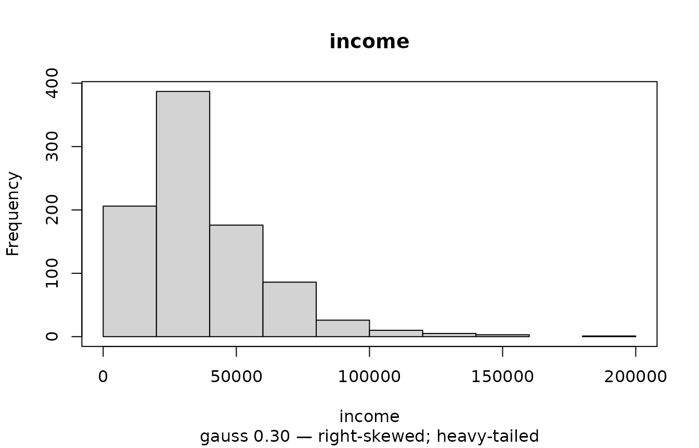
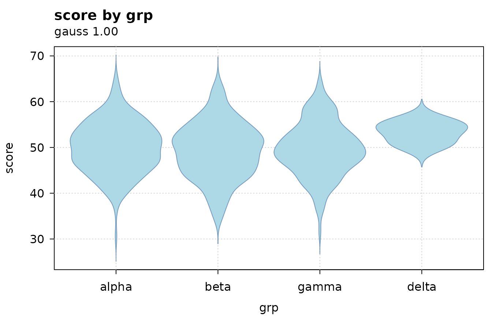
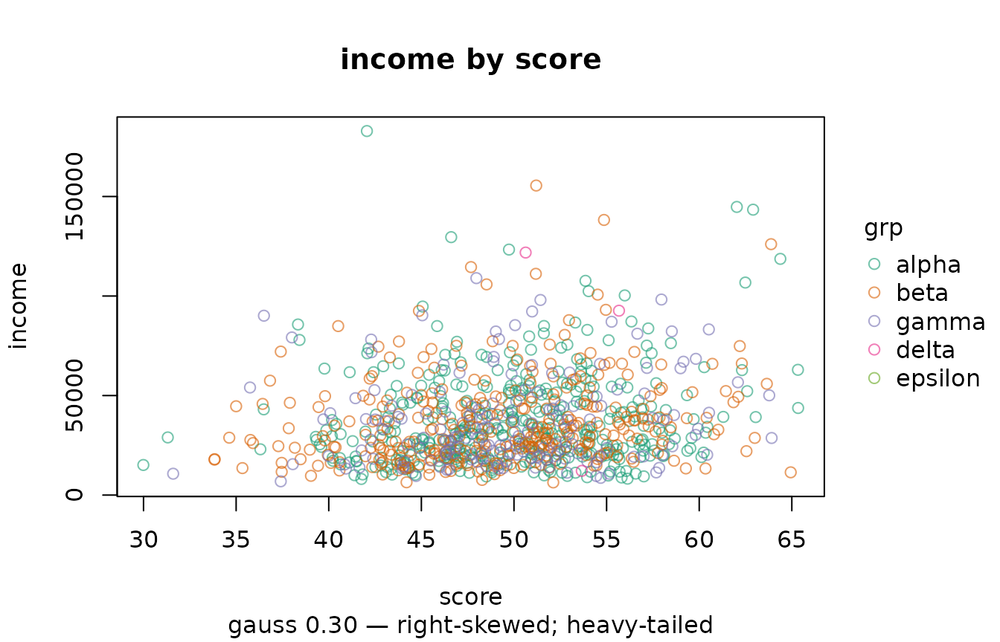
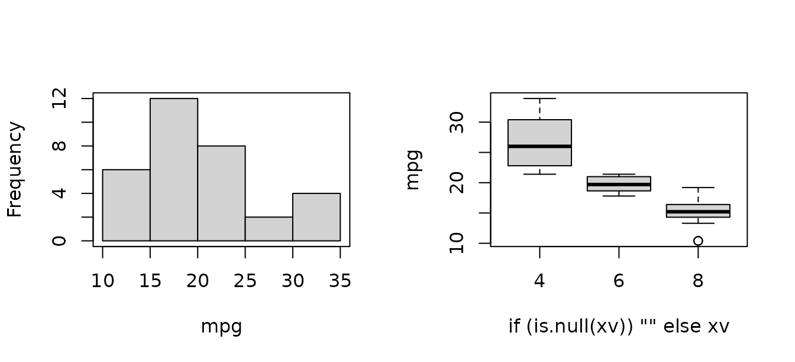

What this package is for
Most exploratory tools answer “what does this data look like”.
illumex asks a narrower question: what about this
data will break a model?
That is a different emphasis, and it shows up everywhere in the output. A factor summary reports how many levels are too thin to estimate, because that is the usual reason a model fails to fit. A date summary reports whether the spacing is regular, because an AR(1) term requires it. A numeric summary reports how far the variable is from gaussian and why, because the reason determines what you do next.
The functions share one prefix with illume, the
modelling package this one was split from and which attaches it, so
exploring and fitting feel like one workflow rather than two packages
bolted together.
ilm_sim() generates a synthetic dataset for examples and
tests. Every column is there because some check should have something to
say about it — a fixture where nothing is wrong tests nothing.
Describing everything at once
r <- ilm_describe_all(d)
names(r)
#> [1] "numeric" "time" "categorical" "logical" "constant"One table per class, because columns of different classes do not share a sensible set of statistics. Constant columns are split out separately: a variable with one value tells you nothing a statistic can show, and it will break a model matrix.
r$numeric
#> variable obs n na sum mean sd se p0
#> 1 id 900 900 0 34200.00 38.000 21.661 0.722 1.00
#> 2 score 900 900 0 44709.09 49.677 5.880 0.196 29.99
#> 3 income 900 900 0 33361609.93 37068.455 22902.677 763.423 6356.18
#> 4 visits 900 900 0 2779.00 3.088 1.830 0.061 0.00
#> 5 claims 900 900 0 3773.00 4.192 4.657 0.155 0.00
#> 6 downtime 900 900 0 1339.00 1.488 2.386 0.080 0.00
#> 7 lab_value 900 792 108 5840.86 7.375 1.153 0.041 4.04
#> p50 p100 p_zero dispersion gauss
#> 1 38.000 75.00 0.000 12.347 0.719
#> 2 49.835 65.34 0.000 NA 1.000
#> 3 31137.270 182886.22 0.000 NA 0.305
#> 4 3.000 10.00 0.053 1.085 0.042
#> 5 3.000 27.00 0.177 5.172 0.000
#> 6 0.000 11.00 0.640 3.826 0.000
#> 7 7.330 11.66 0.000 NA 1.000
#> gauss_note
#> 1 bounded at zero; light-tailed / flat
#> 2
#> 3 right-skewed; heavy-tailed
#> 4 discrete (11 distinct values); bounded at zero
#> 5 18% of values sit exactly at the minimum (0): a floor, see ilm_censor(); bounded at zero
#> 6 discrete (12 distinct values); bounded at zero
#> 7Reading across: p_zero flags zero inflation,
dispersion is the variance-to-mean ratio for count-like
variables, and gauss with gauss_note say how
far the variable is from normal and why.
r$constant
#> variable class obs n na value
#> 1 cohort categorical 900 900 0 2024The gaussian index, and why it is not a p-value
gauss runs from 0 to 1. A value of 1 means the departure
from normality is no larger than sampling noise would produce at this
sample size.
ilm_gauss_check(rnorm(500))$gauss
#> [1] 0.98
ilm_gauss_check(rlnorm(500))$gauss
#> [1] 0It deliberately is not a normality test p-value. Any test of exact normality rejects everything once n is large, so the p-value ends up answering a question nobody asked — you already know real data is not exactly normal. What matters is how far from normal it is, which is an effect size.
# a normality test would reject this; the index does not
ilm_gauss_check(rnorm(1e5))$gauss
#> [1] 1The measure underneath is the Kolmogorov distance to the best-fitting
normal: the largest amount, on the cumulative probability scale, by
which a normal model misstates the data. Ask for it directly with
gauss = "ks_d" if you would rather apply your own
threshold.
ilm_describe(d, "income", gauss = "both")[, c("gauss", "ks_d", "gauss_note")]
#> gauss ks_d gauss_note
#> 1 0.305 0.1134 right-skewed; heavy-tailedThe reason matters more than the number
notes <- function(x) ilm_gauss_check(x)$gauss_note
notes(rlnorm(2000))
#> [1] "bounded at zero; right-skewed"
notes(rt(2000, 3))
#> [1] "heavy-tailed"
notes(rpois(2000, 3))
#> [1] "discrete (12 distinct values); bounded at zero"
notes(c(rnorm(1000), rnorm(1000, 5)))
#> [1] "multimodal (check for subgroups); light-tailed / flat"That last one is the case worth dwelling on. A mixture of two normals is multimodal, and the advice — check for subgroups — is what you actually need. An earlier version of this feature tried to name the single best-fitting distribution family instead, and on that data it confidently answered “uniform”. It was not close to right, and it offered nothing to act on.
What the summaries are looking for
r$categorical[, c("variable", "n_empty", "n_unique", "n_rare", "n_unused",
"case_variants", "note")]
#> variable n_empty n_unique n_rare n_unused case_variants
#> 1 grp 0 4 1 1 0
#> 2 site 46 6 0 0 1
#> note
#> 1 1 unused levels; 1 rare levels (separation risk)
#> 2 46 empty strings (not NA); 1 case/space variantsEach of those columns exists because of a specific failure:
-
n_empty—""is notNAto R, but it is almost always missing to you, and it silently becomes a factor level. -
n_rare— levels with only a handful of observations are the usual reason a factor model will not fit, and in a logistic model a direct route to separation. -
n_unused— a declared but unobserved level produces an all-zero column in the model matrix and then breakspredict()on new data. -
case_variants—"North","north"and"North "counted as three things.
r$logical[, c("variable", "p_TRUE", "note")]
#> variable p_TRUE note
#> 1 flag 0.510
#> 2 consented 0.998 near-constant (separation risk)An indicator that is almost always TRUE is a separation
risk in any binary model.
Dates carry the AR(1) precondition
r$time[, c("variable", "n_unique", "spacing", "regular", "n_gaps", "note")]
#> variable n_unique spacing regular n_gaps
#> 1 date 12 monthly TRUE 0
#> note
#> 1 repeated dates: 12 unique across 900 rows (long format?)regular and n_gaps matter because
illume::ilm_model()’s AR(1) term needs regularly spaced
observations within group. Seeing “irregular, 3 gaps” here is much
better than discovering it when the model fails.
Repeated dates are described rather than warned about: many units sharing a date is simply what long-format panel data looks like.
Problems that belong to pairs of columns
Some problems are not properties of any single variable.
dd <- d
dd$score_copy <- dd$score
ilm_frame_issues(dd)
#> issue columns
#> 1 constant cohort
#> 2 duplicate_columns score = score_copy
#> 3 collinear score ~ score_copy
#> detail
#> 1 zero variance; breaks the model matrix
#> 2 identical values
#> 3 r = 1.0000; coefficients will be unstableNote that score is not reported as identifier-like even
though every value is distinct — a continuous variable is unique per row
by construction. Only discrete-valued columns earn that flag.
Missingness
head(ilm_describe_na_all(d), 4)
#> variable obs n na p_na
#> 1 lab_value 900 792 108 0.12
#> 2 claims 900 900 0 0.00
#> 3 cohort 900 900 0 0.00
#> 4 consented 900 900 0 0.00Sorted with the most missing first, since those are the variables worth looking at.
Plots that carry the verdict
ilm_plot() chooses a plot from the classes of what you
give it, and annotates it with the same verdict
ilm_describe() reports.
ilm_plot(d, "income")
#> ilm_plot: gauss 0.30 — right-skewed; heavy-tailed
The subtitle is not decoration. A histogram of a skewed variable looks like a histogram; the annotation says how far from gaussian it is and in which direction.
You can ask what would be drawn without drawing it:
ilm_pick_geom(d$score)$geom
#> [1] "histogram"
ilm_pick_geom(d$grp, d$score)$geom
#> [1] "box"Rendering is aware of how much data there is
big <- data.frame(a = rnorm(50000), b = rnorm(50000))
ilm_pick_geom(big$a, big$b)
#> $geom
#> [1] "bin2d"
#>
#> $reason
#> [1] "50000 points exceeds n_max = 5000, so density is drawn instead of points"
#>
#> $n
#> [1] 50000A scatter of fifty thousand points is a black rectangle. Above
n_max the plot becomes a binned density, and says so rather
than misleading you quietly.
ilm_plot(big, "a", "b")
#> ilm_plot: gauss 1.00 | 50000 points exceeds n_max = 5000, so density is drawn instead of pointsChoosing the geom yourself
ilm_geom_spec()
#> geom needs_y x_class
#> 1 histogram FALSE numeric
#> 2 density FALSE numeric
#> 3 bar FALSE categorical / logical
#> 4 box TRUE categorical / logical / numeric
#> 5 violin TRUE categorical / logical / numeric
#> 6 point TRUE numeric
#> 7 bin2d TRUE numeric
#> 8 line TRUE time / numeric
#> 9 spine TRUE categorical
#> y_class size_controls
#> 1 not used line/border width
#> 2 not used line/border width
#> 3 not used line/border width
#> 4 numeric / categorical / logical line/border width
#> 5 numeric / categorical / logical line/border width
#> 6 numeric point size
#> 7 numeric -
#> 8 numeric / categorical line/border width
#> 9 categorical line/border widthThat table is not just documentation — it is what the argument checks read, so the documented requirements and the enforced ones cannot drift apart. Ask for something impossible and the error says what would work:
ilm_plot(d, "grp", geom = "histogram")
#> Error:
#> ! geom 'histogram' needs `x` to be numeric, but 'grp' is categorical. Geoms that accept a categorical `x`: 'bar', 'box', 'violin', 'spine'.Appearance
Colours, fills, transparency, point size, palettes and themes are all available, with ggplot2-style names:
ilm_plot(d, "grp", "score", geom = "violin", fill = "lightblue",
alpha = 0.7, theme = "clean")
#> ilm_plot: gauss 1.00
ilm_plot(d, "score", "income", by = "grp", palette = "Dark 2", alpha = 0.6)
#> ilm_plot: gauss 0.30 — right-skewed; heavy-tailed
Cleaning
messy <- data.frame(
"Study ID" = c("1", "2", "3", ""),
someFlag = c("TRUE", "FALSE", "TRUE", ""),
measurement = c("1.5", "2.5", "n/a", ""),
allEmpty = c("", "", "", ""),
check.names = FALSE, stringsAsFactors = FALSE)
ilm_wash_df(messy)
#> study_id some_flag measurement
#> 1 1 TRUE 1.5
#> 2 2 FALSE 2.5
#> 3 3 TRUE n/aNames become snake_case, the empty row and column go, and text
columns that are really numeric or logical are converted.
measurement stays character on purpose: one value does not
convert, and silently turning a column into NAs is worse
than leaving it alone.
Known-bad codes are handled separately, because a sentinel that means missing in one column can be a real measurement in another:
ilm_recode_errors(data.frame(x = c(1, 999, 3), y = c(999, 2, 3)),
errors = 999, cols = "x")
#> x y
#> 1 1 999
#> 2 NA 2
#> 3 3 3And recoding against a lookup table:
ilm_translate(c(1, 2, 3, 99), old = 1:3, new = c("low", "mid", "high"))
#> [1] "low" "mid" "high" NAUnmatched values become NA rather than passing through,
so codes your dictionary does not cover cannot hide.
Duplicates and counts
ilm_counts(d$grp)
#> value n
#> 1 alpha 404
#> 2 beta 329
#> 3 gamma 164
#> 4 delta 3
ilm_counts_tb(d$site, n = 2)
#> top_value top_n bot_value bot_n
#> 1 North 277 North 46
#> 2 South 265 46ilm_counts_tb() shows both ends at once because that is
where the problems are: a level that dominates, and levels too thin to
model.
dup <- data.frame(a = c(1, 1, 2, 2, 2, 3), b = c("x", "x", "y", "y", "z", "w"))
ilm_copies(dup)
#> a b copy_number n_copies
#> 1 1 x 1 2
#> 2 1 x 2 2
#> 3 2 y 1 2
#> 4 2 y 2 2
#> 5 2 z 1 1
#> 6 3 w 1 1Uncertainty without a model
ilm_boot_ci(d, "score", R = 500, seed = 1)
#> stat observed lower upper conf R ci_type n
#> 1 mean 49.67677 49.28963 50.03244 0.95 500 percentile 900For a difference between two groups, ask for the difference directly:
d2 <- d[d$grp %in% c("alpha", "beta"), ]
d2$grp <- factor(d2$grp)
ilm_boot_diff(d2, "score", "grp", R = 500, seed = 1)
#> stat group from to observed lower upper conf R ci_type
#> 1 mean grp alpha beta -0.7764371 -1.609053 0.03153625 0.95 500 percentile
#> adjust n_comparisons n_from n_to p_value p_adj p_superiority excludes_zero
#> 1 none 1 404 329 0.052 0.052 0.026 FALSEexcludes_zero answers the question people actually ask.
Comparing two separate intervals for overlap is a conservative and lossy
substitute: two intervals can overlap while the difference is clearly
non-zero.
Past two groups every pair is compared, and a formula works in place of the two column names:
ilm_boot_diff(score ~ grp, data = d, R = 500, seed = 1)
#> stat group from to observed lower upper conf R ci_type
#> 1 mean grp alpha beta -0.7764371 -1.8089638 0.2560897 0.95 500 max_t
#> 2 mean grp alpha gamma -0.3748473 -1.6862971 0.9366025 0.95 500 max_t
#> 3 mean grp alpha delta 3.3021040 0.3007192 6.3034887 0.95 500 max_t
#> 4 mean grp beta gamma 0.4015898 -0.9985315 1.8017111 0.95 500 max_t
#> 5 mean grp beta delta 4.0785410 1.0440608 7.1130212 0.95 500 max_t
#> 6 mean grp gamma delta 3.6769512 0.5549078 6.7989947 0.95 500 max_t
#> adjust n_comparisons n_from n_to p_value p_adj p_superiority excludes_zero
#> 1 max_t 6 404 329 0.054 0.236 0.026 FALSE
#> 2 max_t 6 404 164 0.500 0.920 0.232 FALSE
#> 3 max_t 6 404 3 0.000 0.022 1.000 TRUE
#> 4 max_t 6 329 164 0.508 0.918 0.746 FALSE
#> 5 max_t 6 329 3 0.000 0.004 1.000 TRUE
#> 6 max_t 6 164 3 0.000 0.012 1.000 TRUESix comparisons at a nominal 95% each do not jointly cover at 95%, so
the intervals are simultaneous by default: the groups
are resampled together, each comparison is standardised by its own
bootstrap standard error, and the largest standardised value in each
replicate supplies one critical value for all of them. On normal,
equal-variance data this reproduces TukeyHSD() to about
0.006, without assuming either normality or a common variance. Set
adjust = "none" for comparisons chosen in advance, or
adjust = "bonferroni" to keep the shape of a percentile
interval.
ref compares every level against one:
ilm_boot_diff(score ~ grp, data = d, ref = "alpha", R = 500, seed = 1)
#> stat group from to observed lower upper conf R ci_type
#> 1 mean grp alpha beta -0.7764371 -1.7560509 0.2031767 0.95 500 max_t
#> 2 mean grp alpha gamma -0.3748473 -1.6190904 0.8693959 0.95 500 max_t
#> 3 mean grp alpha delta 3.3021040 0.4545284 6.1496795 0.95 500 max_t
#> adjust n_comparisons n_from n_to p_value p_adj p_superiority excludes_zero
#> 1 max_t 3 404 329 0.054 0.186 0.026 FALSE
#> 2 max_t 3 404 164 0.500 0.900 0.232 FALSE
#> 3 max_t 3 404 3 0.000 0.014 1.000 TRUEOn skewed data, "percentile" and "bca" hold
their nominal coverage better than "normal" and
"basic". When the skew is severe and the groups are small,
no interval shape rescues a bootstrapped mean – reach for
stat = "median" instead, which stays nominal where the mean
does not.
Unusual values
head(ilm_outliers_all(mtcars), 5)
#> row_id variable value score is_outlier
#> 1 31 hp 335.000 1.845 TRUE
#> 2 16 wt 5.424 1.602 TRUE
#> 3 17 wt 5.345 1.530 TRUE
#> 4 9 qsec 22.900 1.985 TRUE
#> 5 31 carb 8.000 2.000 TRUEThree rules, in decreasing order of robustness. "iqr" is
the Tukey fence and reproduces exactly what a boxplot’s whiskers draw —
it uses Tukey’s hinges, not quantile()’s default, which
matters on small samples and is pinned to
grDevices::boxplot.stats() by a test. "mad"
measures from the median in median absolute deviations.
"zscore" measures from the mean in standard deviations, and
is the weakest of the three for a reason worth seeing:
z <- c(rnorm(30), 100)
c(mad = max(ilm_outliers(z, "mad")$score),
zscore = max(ilm_outliers(z, "zscore")$score))
#> mad zscore
#> 101.639 5.382One large value inflates the standard deviation enough to hide itself. The median and the MAD are not dragged around by the values being detected.
Grouping changes the answer, and usually should:
nrow(ilm_outliers_all(mtcars))
#> [1] 5
nrow(ilm_outliers_all(mtcars, by = "cyl"))
#> [1] 15A value can be perfectly ordinary for its own group and extreme
against the pooled distribution, so flagging without by on
grouped data partly just rediscovers the groups.
A flag is not a verdict. It says a value is far from
the others by some rule — which may mean a typo, a different population,
or an ordinary draw from a heavy tail, and the third is common. Dropping
flagged rows because they are flagged changes what you are estimating.
If the tail is real, the fix is a model that expects it: a different
family, or illume::ilm_model(dispformula = ).
Naming the plot you want
ilm_plot() chooses a geometry from the data. When you
would rather say which one, each has its own function —
ilm_plot_histogram(), ilm_plot_density(),
ilm_plot_box(), ilm_plot_violin(),
ilm_plot_scatter(), ilm_plot_bar(),
ilm_plot_line(), ilm_plot_stat_error() — and
they all take column names as strings, like everything else here.
ilm_plot_c(
ilm_plot_histogram(mtcars, "mpg"),
ilm_plot_box(mtcars, "mpg", x = "cyl"),
nrow = 1
)
ilm_plot_var_pairs() handles every pair at once, mixed
column types included, and ilm_plot_var_all() draws one
panel per column.
The bootstrap difference from earlier can be seen rather than only summarised:
b <- ilm_boot_diff(d, "score", "grp", R = 500, seed = 1)
ilm_plot_boot_diff(b, row = 1)The interval says where the difference is. This says what the resampling produced — whether it is symmetric, skewed, or piled against a boundary, which the two endpoints cannot show.
Profiling: what shape is this data set?
ilm_describe_all() tells you about columns one at a
time. ilm_profile() asks a different question – are there
kinds of row here? – by reducing the columns to a few
dimensions, clustering on those, and then saying what each cluster
is.
cars <- mtcars
cars$cyl <- factor(cars$cyl)
cars$am <- factor(cars$am)
p <- ilm_profile(cars, k_max = 5, B = 25, seed = 1)
cat(p$summary, sep = "\n\n")
#> Cluster 1 holds 5 rows, 15.6% of the data (stable). What sets it apart: carb is higher: the middle half 4 to 6, against 2 to 4 overall; qsec is lower: the middle half 14.6 to 16.5, against 16.9 to 18.9 overall; gear is higher: the middle half 4 to 5, against 3 to 4 overall; and am is '0' for none of them, against 59% overall. Less strongly, 2 more variables set it apart as well.
#>
#> Cluster 2 holds 7 rows, 21.9% of the data (moderate). What sets it apart: qsec is higher: the middle half 18.9 to 20.2, against 16.9 to 18.9 overall; vs is higher: the middle half 1 to 1, against 0 to 1 overall; cyl is '8' for none of them, against 44% overall; and am is '0' for 100% of them, against 59% overall. 1 of its members sits close enough to another cluster to be uncertain.
#>
#> Cluster 3 holds 12 rows, 37.5% of the data (stable). What sets it apart: cyl is '8' for 100% of them, against 44% overall; disp is higher: the middle half 276 to 400, against 120 to 318 overall; gear is lower: the middle half 3 to 3, against 3 to 4 overall; and wt is higher: the middle half 3.52 to 4.07, against 2.46 to 3.57 overall. Less strongly, 5 more variables set it apart as well.
#>
#> Cluster 4 holds 8 rows, 25.0% of the data (stable). What sets it apart: cyl is '4' for 100% of them, against 34% overall; mpg is higher: the middle half 22.8 to 30.4, against 15.2 to 22.8 overall; wt is lower: the middle half 1.62 to 2.2, against 2.46 to 3.57 overall; and am is '0' for none of them, against 59% overall. Less strongly, 6 more variables set it apart as well.The reduction picks its own method from the column types: PCA when they are all numeric, multiple correspondence analysis when they are all categorical, and a mixed method when both are present, as here.
Two things get reported that a bare cluster number does not give you. Stability is a property of the cluster – resample the rows, recluster, and see whether the same grouping comes back. Ambiguity is a property of the row, from its silhouette width, and is independent of cluster size: a point can sit on the boundary between two clusters inside a large and perfectly stable one, which a size-based check would never surface.
p$cluster$clusters
#> cluster size pct jaccard stability mean_silhouette anomalous
#> 1 1 5 15.6 0.766 stable 0.286 FALSE
#> 2 2 7 21.9 0.698 moderate 0.252 FALSE
#> 3 3 12 37.5 0.995 stable 0.675 FALSE
#> 4 4 8 25.0 0.822 stable 0.548 FALSEA cluster is characterised by v-test, the same device
FactoMineR’s catdes() uses. It is a threshold
rather than a test, and is documented as one: the clusters were found
from the very coordinates being tested, so the usual sampling argument
does not apply. What speaks to whether a partition is real is the
stability and silhouette figures above, not the characterisation.
Missing values
ilm_describe_na_all() counts them. The harder question
is whether they matter, and that has a more useful answer than it
usually gets.
set.seed(4)
n <- 500
z <- rnorm(n)
x <- 0.6 * z + rnorm(n)
y <- 0.5 * x + 0.3 * z + rnorm(n)
d2 <- data.frame(x = x, z = z, y = y)
d2$x[plogis(1.2 * z - 0.4) > runif(n)] <- NA # missingness follows z
ilm_check_missing(d2, y = "y", verbose = FALSE)
#> <ilm_missing> 309 of 500 rows complete (61.8%)
#>
#> missing by variable
#> x 191 38.2%
#>
#> pattern: monotone (2 distinct)
#> verdict: RELATED_TO_COVARIATES
#> related to covariates, not to the outcome: complete cases stay unbiased
#>
#> does missingness depend on `y` once the others are held fixed?
#> x partial r = 0.044, p = 0.4
#>
#> strongest associations with missingness
#> x <- z 0.490
#> x <- y 0.216 (outcome)
#>
#> MNAR cannot be ruled out by any test; that needs a sensitivity analysis.Note the verdict. Missingness here depends on z — so
this is emphatically not MCAR — and yet complete-case analysis
is unbiased. Dropping incomplete rows needs missingness to be
independent of the outcome given the covariates, which is far
weaker than MCAR and is satisfied here. Imputing would buy back some
precision and nothing else.
That distinction is why the check asks the question conditionally.
Missingness driven by z is marginally associated
with y, because y depends on z
too; reading the verdict off that marginal association would send you
off to impute for nothing.
Change what drives the missingness and the advice changes with it:
d3 <- d2
d3$x <- x
d3$x[plogis(1.0 * y - 0.4) > runif(n)] <- NA # now it follows the outcome
ilm_check_missing(d3, y = "y", verbose = FALSE)$verdict
#> [1] "RELATED_TO_OUTCOME"Measured over 200 replicates at about 40% missing, the coefficient on
x came back with a bias of 0.0001 and 98% interval coverage
in the first case, against a bias of −0.099 — a fifth of the effect —
and 61.5% coverage in the second.
Imputing, when it is actually needed
Imputing and pooling are illume’s, because pooling needs
a model. With illume loaded:
imp <- ilm_impute(d3, m = 10, seed = 1, verbose = FALSE)
ilm_mi_pool(imp, y ~ x + z, family = "gaussian")Each missing value is drawn from the predictive
distribution rather than set to a fitted mean, and the m
completed data sets are pooled by Rubin’s rules, where the spread of the
estimates across imputations becomes part of the reported
uncertainty. fmi is the fraction of information lost to
missingness.
single = TRUE gives one completed data set and warns.
Filling values in once and analysing as though they had been observed
gets the point estimate about right and the standard errors badly wrong:
in that same simulation, single imputation covered 79% to 89% where the
nominal rate was 95%, because nothing in its standard errors knows part
of the data was invented.
Which values go missing together
pn <- ilm_profile_na(airquality, k_max = 4, B = 25, seed = 1)
#> ilm_reduce_na(): dropping column(s) whose missingness never varies (always or never missing): Wind, Temp, Month, Day
#> Warning: k was chosen as 4, which is the largest value searched. The curve had
#> not turned, so this is where the search stopped rather than where the evidence
#> pointed. Raise `k_max`, or set `k` from what the design says. On mixed data a
#> selector can also lock onto the number of category combinations rather than the
#> number of clusters; plot(x) shows the gap curve.
cat(pn$summary[1:2], sep = "\n\n")
#> Cluster 1 holds 111 rows, 72.5% of the data (stable). What sets it apart: Ozone is missing for none of them, against 24% overall.
#>
#> Cluster 2 holds 2 rows, 1.3% of the data (stable). What sets it apart: Solar.R is missing for 100% of them, against 5% overall; and Ozone is missing for 100% of them, against 24% overall. It is a small cluster, 1.3% of observations: possibly a real minority pattern, possibly a data problem, but worth looking at either way.The same reduce-cluster-describe pipeline, pointed at present/missing indicators instead of values. A block of columns that go missing as one points at a shared cause — a section of a form a whole group skipped — which is a different problem from values going one at a time, and calls for a different fix.
And the boundary of all this is worth stating plainly: MAR and MNAR cannot be told apart from the observed data. That is a theorem, not a gap in the implementation — the data that would separate them are the ones that are missing. Everything above tests MCAR and describes what missingness is related to among the things you can see. If the chance of a value going missing depends on the value itself, no test will reveal it, and the remedy is a sensitivity analysis rather than a better diagnostic.
Into the model
The point of all this is what comes next. The exploration tells you
which family to consider, which variables will cause trouble, and
whether an AR(1) term is even possible. The model is
illume’s:
library(illume)
f <- ilm_model(score ~ income + grp + (1 | id), data = d,
family = "gaussian", verbose = FALSE)
ilm_plot_model(f, "coef")and, once it is fitted, what it says in words:
ilm_interpret(f, ame = FALSE)See vignette("profiling") for structure across many
columns and vignette("anomaly-detection") for rows that are
implausible as combinations. In illume:
vignette("workflow", package = "illume") for where this
sits in an analysis,
vignette("regression-models", package = "illume") for the
modelling, and
vignette("causal-models", package = "illume") for turning
an association into a causal claim.